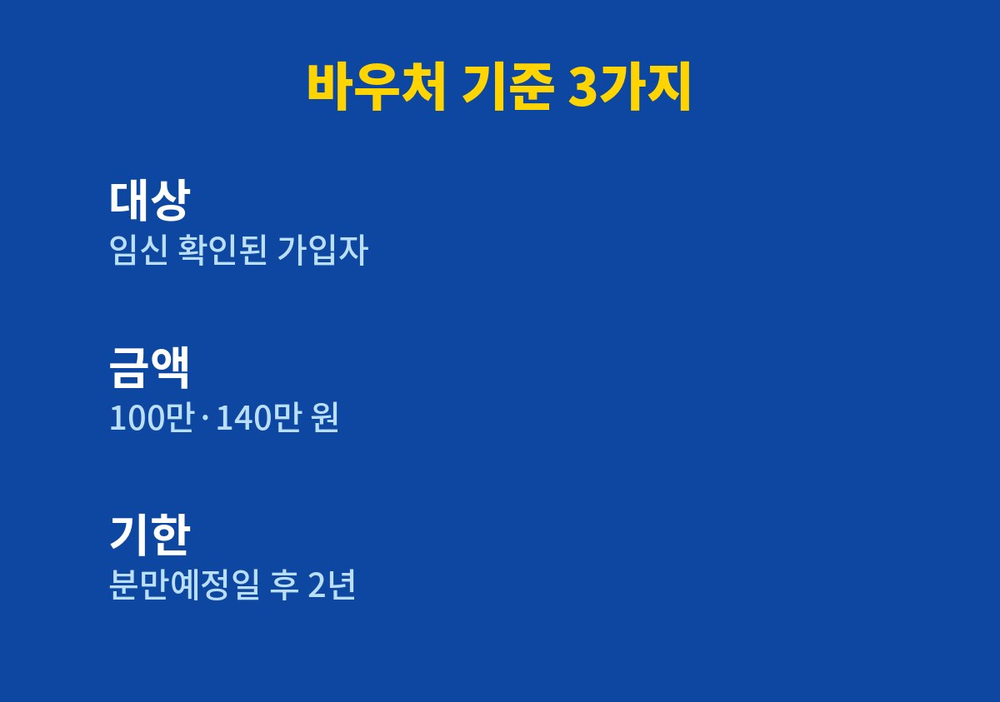
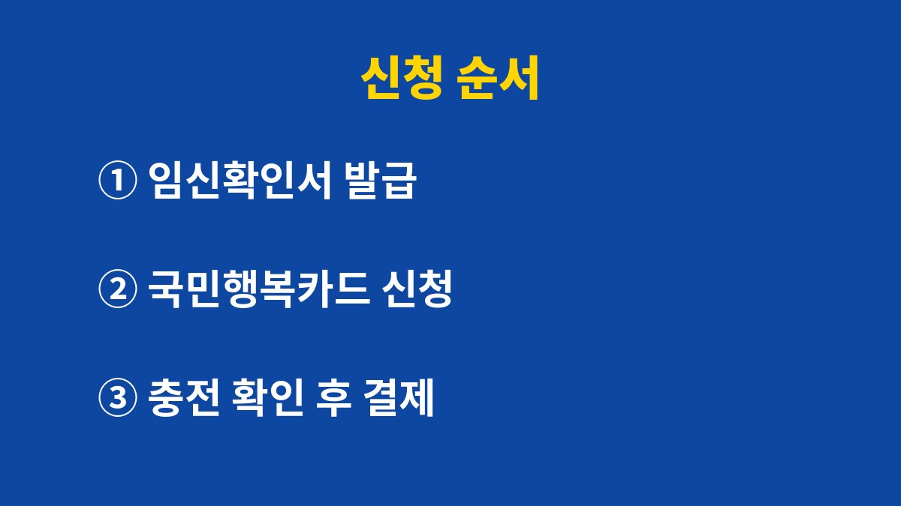

임신출산 진료비 바우처는 임신이 확인된 건강보험 가입자나 피부양자가 국민행복카드로 쓰는 진료비 지원이며, 단태아 100만 원 다태아 140만 원으로 안내되고 사용 기한은 분만예정일 이후 2년까지다.
2026년 11월 기준으로 공개된 안내를 바탕으로 대상, 금액, 신청 순서를 정리했다.
금액보다 먼저 볼 것은 카드를 언제 만들었는지와 사용 기한이다.
이름 때문에 산부인과 검진비 전용으로 생각하기 쉽다.
공개된 안내에는 모든 진료과목의 진료비와 약제비에 쓸 수 있다고 되어 있다.
1세 미만 영유아의 진료비에도 쓸 수 있다는 설명이 함께 있다.
다만 비급여 항목이나 일부 업종이 제외되는지는 확인하지 못했으므로 병원 창구나 공식 공고에서 물어보는 편이 빠르다.
감기로 내과에 가는 날에도, 아이가 태어난 뒤 소아과에 가는 날에도 같은 카드를 내밀면 된다.
그래도 어느 진료까지 차감되는지는 병원 단말기에서 결제하는 순간 드러난다.
접수할 때 바우처 잔액이 얼마인지 한 번 물어보면 현금이나 일반 카드로 먼저 내는 일을 줄일 수 있다.
대상은 임신이 확인된 건강보험 가입자 또는 피부양자다.
의료기관에서 발급한 임신확인서와 국민행복카드가 있어야 바우처를 쓸 수 있다.
표의 금액은 임신 한 번에 대한 총액으로 안내되어 있다.
한 번에 다 쓰는 것이 아니라 임신 중 검진부터 출산 뒤 영유아 진료까지 나누어 쓰는 구조다.
분만예정일이 정해지면 그날에서 2년을 더한 날짜를 달력에 적어 둔다.
기한을 눈에 보이게 해 두면 남은 금액을 중간중간 점검하기 쉽다.
검진은 병원마다 일정이 다르므로 한꺼번에 쓰려고 하기보다 영수증을 모아 사용액을 누적해 보는 편이 편하다.
| 구분 | 안내된 내용 | 따로 확인할 점 |
|---|---|---|
| 대상 | 임신이 확인된 건강보험 가입자 또는 피부양자 | 임신확인서 필요 |
| 금액 | 단태아 100만 원, 다태아 140만 원 | 분만취약지 20만 원 추가 안내는 조건 확인 필요 |
| 사용 기간 | 임신 확인 후부터 분만예정일 이후 2년 | 기한 후 남은 금액의 처리는 공식 안내 확인 |

신청은 서류가 빠지면 창구를 두 번 가야 하는 일이라 준비물 때문에 시간을 쓰는 경우가 많다.
임신확인서와 신분증을 한 번에 챙기고, 어디서 발급받을지 미리 정한 뒤 움직인다.

내가 확인한 안내문에서는 이 제도의 소득 기준을 찾지 못했다.
소득과 재산 심사 결과에 따라 달라질 수 있다는 일반 문구만 있어서 확정해서 쓰지 않는다.
신청 전에 보건복지부와 국민건강보험공단의 공식 공고를 확인해야 한다.
다태아 140만 원과 분만취약지 20만 원 추가는 금액만 확인되고 조건과 절차는 확인되지 않았다.
임신확인서를 받아 두고 카드 발급을 미루다 첫 진료비를 일반 결제로 낸 경우 그 비용이 소급되는지도 카드사에 따로 물어야 한다.
진료비가 바우처로 결제되는 항목인지, 약 처방은 약국에서도 쓸 수 있는지를 접수 때 확인한다.
병원이 달라지면 안내가 다를 수 있어서 이사나 전원을 했다면 처음부터 다시 묻는다.
제도는 해마다 세부 기준이 조정될 수 있어서 이 글의 금액도 신청 시점의 공고와 대조해야 한다.
친구나 가족이 받았던 방식을 그대로 믿기보다 지금 기준으로 한 번 더 확인하는 쪽이 안전하다.
임신확인서를 받은 날 카드 발급부터 신청해 두면 첫 진료비부터 바우처로 낼 수 있다.
해당 사항이 애매하면 국민건강보험공단 지사나 카드사에 임신확인서를 들고 문의하는 쪽이 정확하다.
※ 2026년 11월 기준 공개된 정보를 정리한 글이며, 정확한 대상 요건·금액·신청 기간은 복지로·정부24·관할 주민센터의 공식 공고를 확인하길 바란다.